[N-World Contents] [Book Contents] [Prev] [Next] [Index]
Text
In this chapter you'll learn how to add text to your scene, turn that text into a true 3D object, and enhance the text with professional touches.
In this Chapter
You'll learn about:
New Commands
Before You Begin
N-Geometry lets you specify whether you want a simple or advanced menu for adding text. For the beginning part of this tutorial, let's use the simpler version; later, after you've done a few exercises, you can revisit the advanced version of the menu.
Setting Preferences
1. (CLICK-L) on GeoMenus>Utilities>Preferences>Element Edit.
- Set the Logo Utilities Item to No.
Now, when we begin working with text, we'll be working from the same menu.
Adding Text
Text characters are handled just like any other object in
N-Geometry.
1. (CLICK-L) on GeoMenus>File>New Object>Text.
- The following dialog box appears:
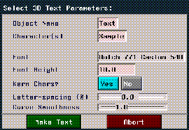
Figure 8.1 Adding some text
Each of the parameters on this dialog box are described in more detail in the N-Geometry Reference Guide.
To get started, all we'll do for now is specify a font to use:
2. (CLICK-L) on the text edit box next to Font.
- A menu similar to that shown below appears:
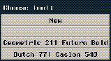
Figure 8.2 Previously selected fonts are made readily available
The fonts at the bottom of this menu appear only after they've been selected (as described below); this makes it easy to pick from two or three fonts you want to work with.
3. (CLICK-L) on New.
- A list of available fonts is displayed:
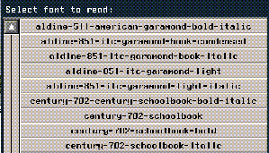
Figure 8.3 Available fonts
4. (CLICK-L) on the font that you want to use.
- For this exercise, choose the following font:
- geometric-211-futura-bold
5. (CLICK-L) on the Make Text button.
- The text object appears in the N-Geometry window:
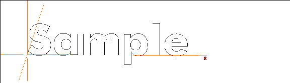
Figure 8.4 Text in the N-Geometry window
Making the Text 3D
Not very exciting yet. So let's pull out the faces and make our letters 3D.
Collect the faces on the front of the letters:
6. (CLICK-R) on faces on the element sensitivity menu.
7. (CLICK-L) on the front faces of the letters to collect them.
8. Wave the mouse off the window to end the collection.
- When you have the faces selected, it should look like this:
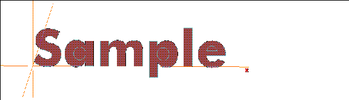
Figure 8.5 Selecting the front faces
9. (SHIFT-L) on the N-Geometry window.
10. (CLICK-L) on Extrude.
- Pull out the faces so that they have some depth.
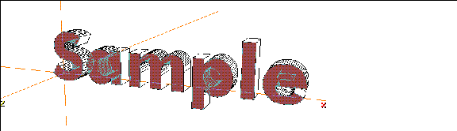
Figure 8.6 Pulling out the faces
Using Dehole
You probably noticed that the faces on some of the letters which are supposed to have holes in them are "solid."
When N-Geometry creates text, it makes it's best guess as to how a letter should be built in 3D; however, font data is 2D, and there's no way for us to guarantee that the data supplied for the font will create a good 3D object.
Luckily, it's easy to fix a letter like this. We call this process deholing, and there are two methods for doing it.
Before You Start
11. (CLICK-L) on bodies on the element sensitivity menu.
12. (SHIFT-L) on the "a" in your text, then (CLICK-L) on Copy and move the copied letter up.
- Now we have two copies of the same letter:
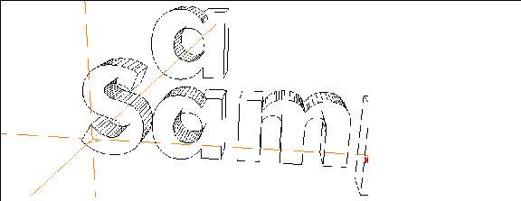
Figure 8.7 Make a copy of the letter so you can see both methods
13. (CLICK-L) on the copy of the letter then press (CTRL-A) on your keyboard to zoom in on the object.
14. (CLICK-L) on faces on the element sensitivity menu.
15. (SHIFT-L) on the front face of the copy of letter "a."
Figure 8.8 Note that now, the "hole" appears to be part of the front face
16. (CLICK-L) on Dehole.
- N-Geometry tries to fix the hole in the letter:
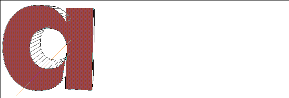
Figure 8.9 After the dehole function
In order to "dehole" a letter like this, N-Geometry automatically makes a pair of cuts across the letter:
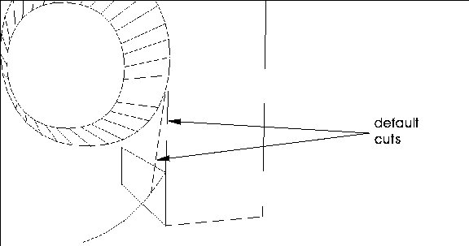
Figure 8.10 Cuts made by the default dehold function
These cuts are perfectly fine; however, depending on the font you use and the letter you are working with, you may get cuts that cross over, creating a "bowtie" that can show up in some renderers:
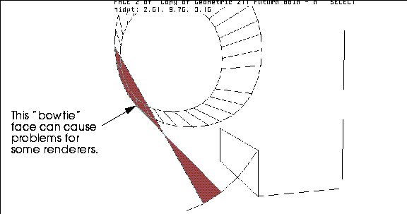
Figure 8.11 You may get a bow tie with some letters in some fonts
Turn Shading on for the object to see what this "bow-tie" face will do during a render:
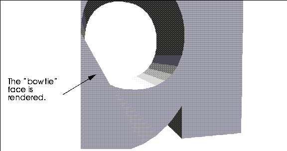
Figure 8.12 You may get a bow tie with some letters in some fonts
Turn Shading back off and we'll show you how to fix this problem.
Using the Cut Operation to Fix Letters
If you get a bow tie face using the Dehole operation:
17. (CLICK-L) on segments on the element sensitivity menu.
18. (SHIFT-L) on the bad segment, then (CLICK-L) on Dissolve.
- This dissolves the segment.
19. (CLICK-L) on faces on the element sensitivity menu.
20. (SHIFT-L) on the face again, then (CLICK-L) on Cut.
- Make a second cut across the face, which does not cross the first:
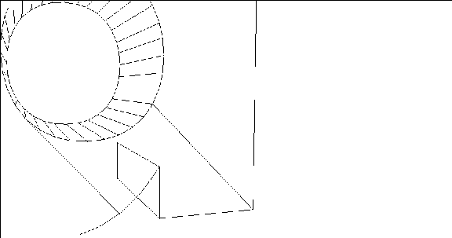
Figure 8.13 The same letter, after using Cut to create a new cut
- Turn Shading on again to see the effects of the fix:
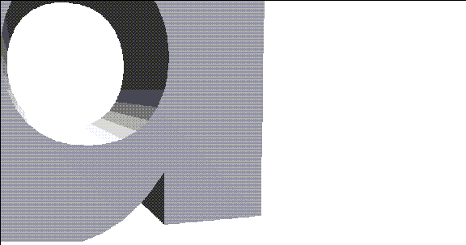
Figure 8.14 No more bowtie!
Fixing the Rest of the Letters
Now, use the Dehole command on the front faces of the letters "a", "p", and "e" in the word Sample. When finished your text should look like this:
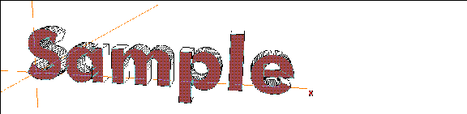
Figure 8.15 After deholing the front faces
Don't Forget the Back Faces
You're not quite done fixing up the letters. Remember, there are back faces too.
21. Turn the camera so that it's facing the back of your text.
22. Collect the backs of the letters you deholed earlier.
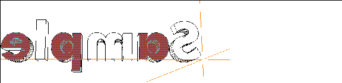
Figure 8.16 Collect the back faces of the same letters
23. (SHIFT-L) on the collected faces, then (CLICK-L) on Dehole.
Figure 8.17 Dehole the back faces too
Beveling the Text
Beveling is a common technique used to "facet" selected segments on text and give it a more professional look.
Here's a useful technique for selecting edges that of a certain hardness (we want to bevel hard edges, but leave those on the surface of a face alone).
To select edges of a certain hardness:
24. Collect all the faces or bodies of the letters you want to bevel.
25. (SHIFT-L) on the collection, then (CTRL-M) on Select Elements.
- You use the middle mouse button because you are selecting segments; you hold the (CTRL) key down because you're going to specify parameters for the operation numerically.
- This displays a dialog box with an arcane looking formula in it; actually, this is a simple LISP function which lets you pick segments that separate faces with a minimum hardness (a segment that separates perpendicular faces, for example, has a hardness of 90 degrees; a segment that cuts a flat face has a hardness of 0 degrees):
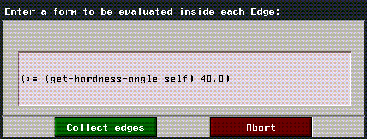
Figure 8.18 Manually specifying which edges to collect
- By default, segments with a hardness greater than 40 degrees are collected; if you want collect segments with a different hardness value, (CLICK-L) next to 40.0, and enter the new value.
26. (CLICK-L) on the Collect edges button.
- For this example, we'll use the default hardness cutoff of 40 degrees.
The segments are automatically collected:
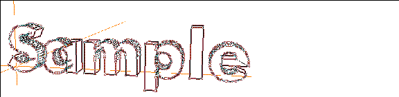
Figure 8.19 Selecting the segments
27. (SHIFT-L) on the N-Geometry window and (CLICK-L) on Bevel.
- The Set Bevel Parameters dialog box appears:
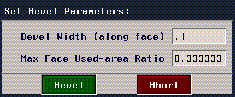
Figure 8.20 Setting the bevel parameters
28. Enter a value of .1 for Bevel Width.
- (This value will vary according to the relative size of your text and how much of a bevel you want.)
29. (CLICK-L) on the Bevel button.
30. Truck the camera in close on one of the letters:
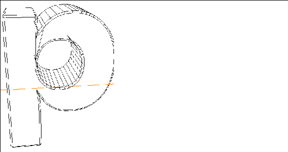
Figure 8.21 The beveled edge of the letter "p"
- The selected edges are beveled using the bevel width specified in the Set Bevel Parameters dialog box.
31. Turn Shading on to see the effect.
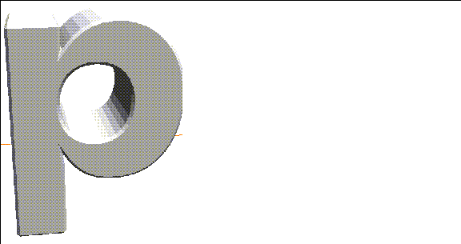
Figure 8.22 Shaded and beveled letter
Your complete text sample should look like this:
Figure 8.23 Shaded and beveled text
The Logo Utilities Item
Now that you know how to use the Extrude and Bevel commands to customize your text, we can talk about the Logo Utilities item a little bit.
32. (CLICK-L) on GeoMenus>Utilities>Preferences>Element Edit.
- Set the Logo Utilities Item to Yes.
33. (CLICK-L) on GeoMenus>File>New Object>Text.
- Now, additional features appear on the text dialog box:
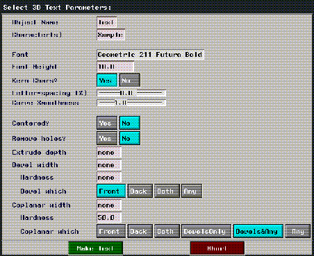
Figure 8.24 Specifying text characteristics with the Logo Utilities item
- The various parameters on this menu are described in detail in the N-Geometry Reference Guide.
- Note that you can remove holes, extrude, and bevel text all by specifying the appropriate values in this dialog box. The earlier portion of this chapter taught you how to do this manually, if you ever need to make your own fixes.
Faces with Holes
There is a complete discussion of faces with holes in the "Troubleshooting" appendix of the N-Geometry Reference Guide.
That appendix describes the various ways to cut faces with holes, and discusses the different kinds of operations that can be performed on holes with faces. If you're working with text, you should read that discussion.
Restructuring Text
Using Set Home & Animating Letters or Words
When you add text, each letter is added as a separate object, restructured under the "word" object.
(CLICK-L) on GeoMenus>Visibility, then (CLICK-R) on a text object to see that each letter object is inferior to the superior word object:
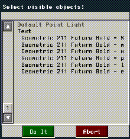
Figure 8.25 Individual letters are restructured under the "word" object
- Note. The letter subobjects, although transformed, inherit the transformation matrix of the top-level word object if the word object is transformed. If you animate a letter individually before using the Set Home command on it, it will "snap back" to the word object's origin.
When you add a string of text, each letter is transformed along the X axis; you can display the local axes for your text object by choosing GeoMenus>Camera>Local Axes, then choosing the text object whose axes you want to display.
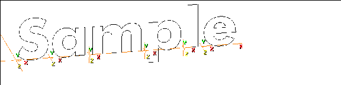
Figure 8.26 Local axes displayed for an object and its subobjects
When you animate an object in N-Dynamics, the first thing that happens is an initialization of that object's transformation matrix to its home state.
If you are animating the entire group of letters (using the "word" object), you'll get the results you expect-you can rotate the word around, make it spin, etc.
However, if you animate letters individually, when the letter is initialized it uses the superior word object's transformation matrix.
If you want to work with each letter individually:
34. (CLICK-L) on objects in the element sensitivity menu.
35. Collect the letters you want to animate independently.
36. (SHIFT-L) on Set Home.
The Set Home operation makes the object's current location its home position. After using Set Home on a letter (or any object), initializing that object returns it to that location.
Congratulations!
You've now learned how to work with text and a little bit about the transformation matrices of objects and subobjects, including when you need to use Set Home on an object.
[N-World Contents] [Book Contents] [Prev] [Next] [Index]
 Another fine product from Nichimen documentation!
Another fine product from Nichimen documentation!
Copyright © 1996, Nichimen Graphics Corporation. All rights
reserved.